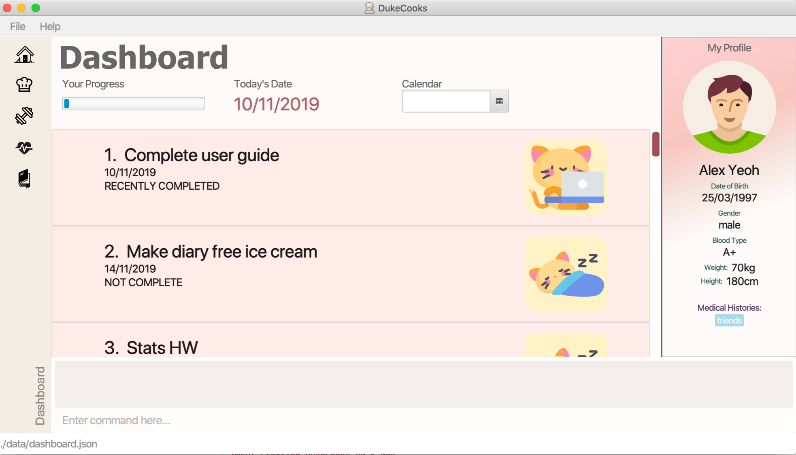

By: CS2103T-T10-2 Since: Sep 2019 Licence: MIT
1. Welcome to DukeCooks
1.1. Who are we?
DukeCooks is a revolutionary lifestyle application, specially designed for health-conscious individuals. DukeCooks runs on the Command-Line Interface (CLI), allowing you to execute different commands, all within a single line. You will be able to manage various aspects of your lifestyle, from your diet, to exercises and health records.
(Think of a nice one-liner?)
Now you can use DukeCooks to manage all your lifestyle needs, all within a single app.
1.2. Using the User Guide
Everything about DukeCooks can be found in this User Guide.
Want quick navigation? You can jump to different sections by clicking on the links located in the table of contents.
Having trouble understanding this guide? You may refer to the following table for the different symbols and formatting used throughout the guide.
<item> |
Items in angle brackets are compulsory parameters |
[item] |
Items in square brackets are optional parameters |
|
Useful tips and tricks |
|
Additional information that is good to know |
|
Important pointers to take note |
Came across some unfamiliar terms? Head over to our Glossary section for some common terms used in this guide.
Want a quick summary of all the available commands? You can find them at our Command Summary section.
1.3. Quick Look at DukeCooks
(Include UI Screenshots + explain the components)
1.4. Understanding DukeCooks
DukeCooks consists of 5 main features. You may click on the following features below to find out more about the feature and their available commands.
-
Dashboard - (Fill in a simple line for your feature?)
-
Recipe Book - (Fill in a simple line for your feature?)
-
Exercise - (Fill in a simple line for your feature?)
-
Health - (Fill in a simple line for your feature?)
-
Diary - Create diary posts to share with your friends and family!
2. Quick Start
-
Ensure you have Java
11or above installed in your Computer. -
Download the latest
DukeCooks. -
Copy the file to the folder you want to use as the home folder for DukeCooks.
-
Double-click the file to start the app. The GUI should appear in a few seconds.
 -
Refer to [Features] for details of each command.
3. Commands
3.2. Recipe Book
Need to organise your large collection of recipes? Look no further! You will be able to perform the various recipe-related commands listed in this section.
3.2.1. Adding a recipe: add recipe
Initializes creation of a recipe with input exerciseName. DukeCooks will prompt for ingredients. User may key in ingredients with price, in the format: <exerciseName> $<price>. Once done, user may enter done. DukeCooks will prompt for nutritional value in the format: <kcal> <carbs(g)> <fat(g)> <protein(g)>.
Format: add recipe <exerciseName>
Examples:
-
add recipe Chicken Rice
Output: Recipe “Chicken Rice” has been created! Please enter the ingredients. -
Chicken Breast $2
Output: “Chicken Breast” has been added to the ingredients list. Anything else? -
Seasoned Rice $1
Output: “Seasoned Rice” has been added to the ingredients list. Anything else? -
done
Output: Ingredients list for “Chicken Rice” is complete! Please enter the nutritional value. -
666 55 44 30
Output: Nutritional value for “Chicken Rice” captured. “Chicken Rice” successfully created!
3.2.2. Deleting a recipe: delete recipe
Deletes recipe with specified exerciseName.
Format: delete recipe <exerciseName>
Examples:
-
delete recipe Chicken Rice
Output: “Chicken Rice” has been deleted from the recipe book!
3.2.3. Listing your recipes: list recipe
Lists all recipe names.
Format: list recipe
Examples:
-
list recipe
Output: Lists all recipes.
3.2.4. Viewing a recipe: view recipe
Lists ingredients of specified recipe, nutritional value, and image, difficulty and preparation time, if applicable.
Format: view recipe <exerciseName>
Examples:
-
view recipe Chicken Rice
Output: Shows the recipe named “Chicken Rice”, as long as it exists in the recipe book.
3.2.5. Giving a recipe an image: [coming in v2.0]
Adds image of recipe by retrieving the image with the specified file exerciseName. Files are to be placed in the folder [to be implemented].
Format: recipe <exerciseName> image <filename>
3.2.6. Giving a recipe a difficulty level: [coming in v2.0]
Tags the recipe specified with the difficulty, ranging from 1 to 3.
Format: recipe <exerciseName> difficulty <difficulty>
3.2.7. Giving a recipe preparation timing: [coming in v2.0]
Tags the recipe specified with the preparation time, in minutes.
Format: recipe <exerciseName> preptime <time(min)>
3.2.8. Adding a shopping list: [coming in v2.0]
Creates a new shopping list with specified exerciseName.
Format: add shoplist <exerciseName>
3.2.9. Deleting a shopping list: [coming in v2.0]
Deletes specified shopping list.
Format: delete shoplist <exerciseName>
3.2.10. Listing your shopping lists: [coming in v2.0]
Lists all shopping list names.
Format: list shoplist
3.2.11. Viewing a shopping list: [coming in v2.0]
Collates the ingredients to be bought and returns them as a list. Also displays the total cost of the shopping list, and each ingredient’s individual price.
Format: view shoplist <exerciseName>
3.2.12. Adding recipe to a shopping list: [coming in v2.0]
Adds specified recipe to the shopping list.
Format: shoplist <exerciseName> add <recipe>
3.2.13. Deleting a recipe from a shopping list: [coming in v2.0]
Deletes specified recipe from the shopping list.
Format: shoplist <exerciseName> delete <recipe>
3.2.14. Add a meal plan: [coming in v2.0]
Creates a new meal plan with specified exerciseName.
Format: add mealplan <exerciseName>
3.2.15. Delete a meal plan: [coming in v2.0]
Deletes specified meal plan.
Format: delete mealplan <exerciseName>
3.2.16. List your meal plans: [coming in v2.0]
Lists all meal plan names.
Format: list mealplan
3.2.17. View a meal plan: [coming in v2.0]
Displays daily nutritional value of the meal plan.
Format: view mealplan <exerciseName>
3.2.18. Add recipe to a meal plan: [coming in v2.0]
Adds the specified recipe to the specified meal plan, according to the day listed in the <day> field. The <day> field is a number ranging from 1 to 7, for the 7 days present in the meal plan.
Format: mealplan <exerciseName> <day> add <recipe exerciseName>
3.2.19. Generate a shopping list for a meal plan: [coming in v2.0]
Generates a shopping list for the specified meal plan. If <shoplist exerciseName> is not specified, we use <exerciseName> by default.
Format: mealplan <exerciseName> shoplist <shoplist exerciseName>
3.3. Dashboard
Can’t track all your deadlines? Look through the available commands in this section and start managing them.
3.3.1. Adding a task
Let’s start by using the add command to add some tasks into DukeCooks!
Command: add task
Format: add task tn/insert task here td/ insert date here
|
When entering the date for a task, please follow the given format: day/month/year |
Example usage: add task tn/Bake a Cake td/29/10/2019

3.3.2. Editing a task's details
Made some typos when adding a task?
Fret not! You are able to make changes to them.
Command: edit task
Format: edit task index number
Example usage: edit task 1 tn/Bake cupcakes td/30/10/2019

3.3.3. Removing a task
Decided that this task is not needed?
Well you can delete them off from DukeCooks.
Command: delete task
Format: delete task index number
Example usage: delete task 2

3.3.4. Marking a task as complete
Finished with a task?
Check it off the list!
Command: done
Format: done index number
Example usage: done 1

|
A task index number is available at the left side of the task’s name. |
3.3.5. Finding tasks
For those who want to know what are the tasks relevant given a keyword.
Command: find task
Format: find task keyword
Example usage: find task cake

3.3.6. Viewing all the tasks
For those that want to know all the tasks they have added into DukeCooks.
Command: list task

3.3.7. Viewing incomplete tasks
Look at all the tasks you have to complete!
Command: list taskincomplete


3.4. Health Records
Going for a health checkup soon? You can use the commands in this section to manage your health records, all within DukeCooks!
3.4.1. View User Profile: view profile
Show a summary of user’s medical history, allergies, body measurements
Format: view profile
-
Prompt to create profile if user profile does not exist
| DukeCooks will only have one user profile! |
3.4.2. View Health Data: view health
Views Health Records of specific type.
Format: view health <type> [time period]
| By default, DukeCooks will show health records of past 1 month if [time period] is not specified. |
| Records of Menstrual Cycle will only be made available for users declared as female under User Profile. |
Examples:
-
view health glucose 3 month
Shows user’s blood sugar records of the past 3 months as of today. -
view health exerciseWeight
Shows user’s exerciseWeight of the past 1 month as of today.
3.4.3. Add Health Data: add health
Adds a health record of specified type with input value.
Format: add health <type> <value> [date] <time>
| if [date] is not specified, DukeCooks will set as today to be the default. |
| Records of Menstrual Cycle will only be made available for users declared as female under User Profile. |
Examples:
-
add health blood pressure 120/80 9am
Adds a new blood pressure record of 120/80 mmHg as of today 9am. -
add health menstrual
Adds a new start date record if DukeCooks finds no menstrual records for the month. Else, Dukecooks will add as new end date record.
3.4.4. Edit Health Data: edit health
Edits an existing health record of specified record ID with input value to overwrite.
Format: edit health <record id> <value>
-
<record id> refers to the unique identifier attributed to each health record upon creation.
Examples:
-
edit health BP129391 133/80
Edits the existing blood pressure record from today 9am to 133/80 mmHg. -
edit health W000123 50
Edits exerciseWeight record id of W000123 to 50kg.
3.4.5. Delete Health Data: delete health
Deletes an existing health record of specified record ID.
Format: delete health <record id>
-
<record id> refers to the unique identifier attributed to each health record upon creation.
Examples:
-
delete health BP129391
Deletes the health record of BP129391. -
delete health W000123
Deletes the health record of W000123.
3.4.6. View Medical Appointments: [coming in v2.0]
Shows all the medical appointment for the month.
Format: view appt [time period]
Examples:
-
view appt
View all the medical appointments for the month. -
view appt 3 month
View all the medical appointments of the next 3 months.
3.5. Add Medical Appointment: [coming in v2.0]
Adds a new medical appointment where user can include an optional note.
Format: add appt <date time> [note]
-
DukeCooks will prompt reminder when appointment is in a week’s time.
Examples:
-
add appt 31/12/2019 8am
Add a new medical appointment for 31st Dec 2019, 8AM. -
add appt 31/12/2019 8am thomson medical - blood glucose
Add a new medical appointment for 31st Dec 2019, 8AM with note “thomson medical - blood glucose” .
3.5.1. Edit Medical Appointment: [coming in v2.0]
Edits an existing medical appointment.
Format: edit appt <Appt ID> [date time] [note]
-
<Appt ID> refers to the unique identifier attributed to each medical appointment upon creation.
-
At least one of the optional fields must be provided
-
Existing value will be overwritten with the new inputs given
Examples:
-
edit appt APPT0001 CGH - blood glucose
Edits the note to “CGH - blood glucose”. -
edit appt APPT0001 31/12/2019 12pm
Change the medical appointment to be 31st Dec 2019, 12PM. -
edit appt APPT0001 31/12/2019 1.30pm CGH - blood glucose
Change the medical appointment to be 31st Dec 2019, 1.30PM with “CGH - blood glucose” note.
3.5.2. Delete Medical Appointment [coming in v2.0]
Deletes an existing medical appointment.
Format: delete appt <APPT ID>
-
<APPT ID> refers to the unique identifier attributed to each medical appointment upon creation.
Examples:
-
delete appt APPT0001
Deletes the medical appointment of APPT0001.
3.5.3. Print Health Records to PDF [coming in v2.0]
Generates a PDF copy of health records.
Format: print health <type> [MORE_TYPES] [time period]
-
If more than one type of data to print, the data will be displayed in the order of input (refer to example).
| By default, DukeCooks will generate pdf with health records for the past 1 month if [time period] is not specified. |
Examples:
-
print health glucose
Generates a PDF copy of all the blood sugar records for the past month as of today -
print health glucose blood pressure
Generates a PDF copy of all the blood sugar and blood pressure records respectively from the past month as of today. Data on blood sugar will come before blood pressure. -
print health glucose blood pressure 01/01/2019 - 31/08/2019
Generates a PDF copy of all the blood sugar and blood pressure records respectively from 1st Jan 2019 to 31st Aug 2019.
3.6. Workout Tracker
Planning your next workout? You can refer to the commands in this section to help you get started with your exercise regime in DukeCooks.
3.6.1. Adding an exercise: add exercise
Adds an exercise to exercise list. App will then prompt for the muscle type, level of intensity (out of 5), instructions as well as images of the steps (in directory form) (optional) in order.
Once done you can add the recommended number of sets (optional), recommended number of repetitions (optional), recommended timing in minutes(optional), exerciseWeight (optional) in the format: s/SETS r/REPETITIONS w/WEIGHT t/TIMING
Format: add exercise <exerciseName>
Examples:
-
add exercise Inclined Bench Press
Output: Exercise “Inclined Bench Press” has been created. Please enter the muscle groups it trains, separating each muscle by a “/”. -
lats/chest
Output: Muscle group(s) have been added! Now lets add intensity level out of 5! -
4
Output: Now let’s add the instructions! -
Lie down on an inclined bench
Output: Step 1 added! Type done when you’re done with all the instructions! -
Push exerciseWeight above head
Output: Step 2 added! Type done when you’re done with all the instructions! -
done
Output: Almost done! If you want to add an image please specify the folder! Otherwise type “/”. -
/
Output: If you want to specify your reps, sets and exerciseWeight you may now do so. Otherwise type “/”. -
w/30kg r/5 s/5 t/1:00
Output: Nice exercise has been created!
3.6.2. List Exercise: list exercise
List exercises which matches optional parameters specified eg. muscle type/intensity.
Format: list exercise m/MUSCLEGROUP i/INTENSITY
3.6.3. Delete exercise: delete exercise
Deletes exercise of specified index.
Format: delete exercise <index>
3.6.4. View exercise: view exercise
View all the details of an exercise of the specified index.
Format: view exercise<index>
3.6.5. Add calorie: [coming in v1.3]
Tracks calorie burned per rep/set of the exercise in kcal.
Format: calorie <index> <calories>
3.6.6. Check History: [coming in v2.0]
Checks the history of all the pass workouts as well as their statistics eg. exerciseWeight used, number of times exercise is carried out, workouts that use this exercise.
3.6.7. Preset Exercises: [coming in v2.0]
If the list of exercises is empty, a list of preset exercises are generated.
3.6.8. Create Workout: workout
Adds a workout to workout list. The app will then display a list of exercises to be added to the workout, you can then filter this by adding specifications such as muscle type. To add an exercise, simply specify the index on the current list that is displayed. If the exercise has a recommended number or reps, sets, exerciseWeight and timing you will be asked whether to follow it. Otherwise you can specify what you wish. Once you have added all the exercises, you will then be asked to specify the amount of time for rest in between sets.
Format: workout <exerciseName>
3.6.9. List Workout: list workout
List exercises which matches optional parameters specified eg. muscle type/intensity/total time.
Format: list exercise m/MUSCLEGROUP i/INTENSITY t/TOTALTIME
3.6.10. Delete workout: delete workout
Deletes workout of specified index.
Format: delete workout <index>
3.6.11. Run Workout: run
Runs a workout with a timer. Shows the details of the exercise: instructions, reps, sets, exerciseWeight as well images if provided. After workout, stats will be automatically be updated and weights of workout will be increased accordingly.
Format: run <index>
3.7. Diary
Want to share great recipes and workout tips with your friends? Look through the available commands in this section and start sharing!
3.7.1. Create Diary: create diary
Creates a new diary with the specified exerciseName
Format: create diary <diary exerciseName>
-
Diary names are unique
Examples:
-
create diary Healthy Living
Creates a new diary with the exerciseName “Healthy Living”
3.7.2. Delete Diary: delete diary
Deletes the diary with the specified exerciseName
Format: delete diary <diary exerciseName>
-
Diary exerciseName should already exist
Examples:
-
delete diary Healthy Living
Deletes the diary with the exerciseName “Healthy Living”
3.7.3. Add Page: add page
Adds a page to the end of the specified diary
Format: add page <type> <diary exerciseName>
* Diary should already exist
| Users can only add pages of types: health, food or exercise. |
Examples:
-
add page health Healthy Living
Adds a health page to the diary named “Healthy Living” -
add page food Healthy Living
Adds a food page to the diary named “Healthy Living” -
add page exercise Healthy Living
Adds an exercise page to the diary named “Healthy Living”
3.7.4. Delete Page: delete page
Deletes the specified page from the specified diary
Format: delete page <index> <diary exerciseName>
-
Diary should already exist
-
Index should a positive integer
Examples:
-
delete page 2 Healthy Living
Deletes page 2 of the diary named “Healthy Living”
3.7.5. Link Recipes: [Coming in v2.0]
Creates a new food page in the specified diary, using pre-existing recipes
Format: link recipe <recipe exerciseName> /to <diary exerciseName>
-
Diary should already exist
-
Recipe should already exist
| Deleting recipes will not delete the linked pages in diary! |
Examples:
-
link recipe Caesar Salad /to Healthy Living
Creates a food page about “Caesar Salad” and adds it to the diary named “Healthy Living”
3.7.6. Link Exercises: [Coming in v2.0]
Creates a new exercise page in the specified diary, using pre-existing exercises
Format: link exercise <exercise exerciseName> /to <diary exerciseName>
-
Diary should already exist
-
Exercise should already exist
| Deleting exercises will not delete the linked pages in diary! |
Examples:
-
link exercise Crunch /to Healthy Living
Creates an exercise page about “Crunch” and adds it to the diary named “Healthy Living”
3.7.7. Link Health Records: [Coming in v2.0]
Creates a new health page in the specified diary, using pre-existing records
Format: link records <record id> /to <diary exerciseName>
-
Diary should already exist
-
Records should already exist
| Deleting health records will not delete the linked pages in diary! |
Examples:
-
link records BP129391 /to Healthy Living
Creates a health page about “BP129391” and adds it to the diary named “Healthy Living”
3.7.8. Edit Diary: [Coming in v2.0]
Allows user to edit some basic information in the diary
Format: edit <diary exerciseName>
-
Diary should already exist
Examples:
-
edit Healthy Living
Users will now be able to edit basic information in the diary named “Healthy Living”
3.7.9. Edit Page: [Coming in v2.0]
Allows user to edit basic information in the specified page of the specified diary
Format: edit page <index> <diary exerciseName>
-
Diary should already exist
-
Index should be a positive integer
Examples:
-
edit page 2 Healthy Living
Users will be able to edit some basic information in page 2 of the diary named “Healthy Living”
3.7.10. View Diary: [Coming in v2.0]
Allows user to view the specified diary in a page-form
Format: view <diary exerciseName>
-
Diary should already exist
Examples:
-
view Healthy Living
Users will now be able to view the diary in a page-view in the GUI
3.7.11. Print Diary: [Coming in v2.0]
Allows user to print the specified diary in PDF format
Format: print <diary exerciseName>
-
Diary should already exist
Examples:
-
print Healthy Living
A PDF format of the diary named “Healthy Living” will be generated
4. Command Summary
Recipe Book
-
Add recipe :
add recipe <exerciseName>
e.g.add recipe Chicken Rice -
Delete recipe :
delete recipe <exerciseName>
e.g.delete recipe Chicken Rice -
List recipes :
list recipe -
View recipe :
view recipe
e.g.view recipe Chicken Rice
Dashboard (Analytics & Suggestions)
-
Get suggestions :
suggest -
Get random food suggestions :
suggest food -
Get new food suggestions :
suggest new food -
Get statistics :
stats -
Get food statistics :
stats food -
Get exercise statistics :
stats exercise
Health Records
-
View User Profile :
view profile -
View health data :
view health <type> [time period]
e.g.view health glucose 3 month -
Add health data :
add health <type> <value> [date] <time>
e.g.add health blood pressure 120/80 9am -
Edit health data :
edit health <record id> <value>
e.g.edit health BP129391 133/80 -
Delete health data :
delete health <record id>
e.g.delete health BP129391
Workout Tracker
-
Adding an exercise :
add exercise <exerciseName>
e.g.add exercise Inclined Bench Press -
List exercise :
list exercise [MUSCLEGROUP] [INTENSITY] -
Delete exercise :
delete exercise <index> -
View exercise :
view exercise<index> -
Create workout :
workout <exerciseName> -
List workout :
list exercise [MUSCLEGROUP] [INTENSITY] [TOTALTIME] -
Delete workout :
delete workout <index> -
Run workout :
run <index>
Food Diary
-
Create Diary :
create diary
e.g.create diary Healthy Living -
Delete Diary :
delete diary <diary exerciseName>
e.g.delete diary Healthy Living -
Add page :
add page <type> <diary exerciseName>
e.g.add page health Healthy Living -
Delete page :
delete page <index> <diary exerciseName>
e.g.delete page 2 Healthy Living